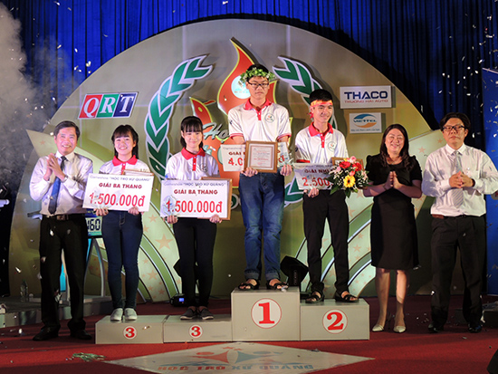

Từ Huyền thoại Everest đến Học trò xứ Quảng

Lần cập nhật cuối lúc Thứ sáu, 27 Tháng 11 2015 09:18 Viết bởi Administrator Thứ sáu, 27 Tháng 11 2015 08:34
Cả hai đều là những sân chơi trí tuệ, bổ ích dành cho học sinh THPT. Với "Huyền thoại Everest", đây là sáng kiến của các em cựu học sinh trường THPT Chuyên Nguyễn Bỉnh Khiêm muốn tạo ra một sân chơi trí tuệ cho các thế hệ học sinh đàn em đang tụ hội về học tập, rèn luyện tại ngôi trường chất lượng hàng đầu của tỉnh Quảng Nam.
Điều quan trọng là mục đích của sân chơi này. Các cựu học sinh muốn thông qua đây tạo cơ sở, nền tảng, động lực để các thế hệ đàn em đủ bản lĩnh, tự tin thể hiện sự thông minh, sáng tạo của mình khi tham gia các cuộc thi học thuật. Em Nguyễn Văn Đặng Sơn - một cựu học sinh và là một thành viên nòng cốt của Ban tổ chức chương trình "Huyền thoại Everest" chia sẻ những mong muốn, ấp ủ, khát khao "Mục tiêu của chúng em khi xây dựng sân chơi này là muốn hướng tới một hoạt động lâu dài, một điểm nhấn, là thương hiệu riêng khi nghĩ đến THPT Chuyên Nguyễn Bỉnh Khiêm của Quảng Nam".
Từ ý tưởng đến hành động, các em cựu học sinh đã thể hiện sự quyết tâm cao độ. Sau một thời gian ấp ủ, lên kế hoạch tổ chức, tìm kiếm nguồn tài trợ, tranh thủ sự giúp đỡ nhiều mặt của BGH và Đoàn trường THPT Chuyên Nguyễn Bỉnh Khiêm; các em đã tạo nên một sân chơi vô cùng hấp dẫn, lý thú thu hút học sinh toàn trường tham gia. Thành công trước hết của "Huyền thoại Everest" là sự lôi cuốn và sức lan toả của nó. Sân chơi có sự tham gia đầy đủ học sinh từ 3 khối lớp chuyên với sự hiện diện các gương mặt sáng giá, tiêu biểu của các môn chuyên. Trải qua các vòng loại, Ban tổ chức cuộc thi đã chọn ra được 4 em vào vòng chung kết: Nguyễn Trần Mai Anh (10 Chuyên Hoá), Đặng Nguyễn Vĩ (11 Chuyên Toán), Lê Trung Thông ( 11 Chuyên Hoá ), Nguyễn Minh Nghĩa (11 Chuyên Sử- Địa).
Thành công có tính quyết định của sân chơi này là sự sáng tạo trong việc làm mới nội dung và hình thức dựa trên phiên bản chương trình "Đường lên đỉnh Olympia" của VTV3 vốn đã trở thành thương hiệu lâu nay. Về nội dung, có nhiều câu hỏi hay, kiến thức phong phú, phù hợp với trình độ học sinh THPT nói chung và học sinh THPT Chuyên nói riêng, phát huy được sự nhạy bén, linh hoạt, thông minh của người chơi. Về hình thức, có thể nói sân chơi “Huyền thoại Everest” rất hấp dẫn. Các em đã thiết kế, xây dựng được một chương trình rất công phu, đẹp và hiện đại trên nhiều mặt. Nhiều clip được dàn dựng công phu, hoành tráng, có chiều sâu; các phần mềm ứng dụng trong cuộc thi là sản phẩm của các em cựu học sinh đang công tác, học tập ở trong nước và nước ngoài. Tất cả đã phô diễn được những nét riêng độc đáo, mang đậm dấu ấn của cựu học sinh và học sinh THPT Chuyên Nguyễn Bỉnh Khiêm. Điều này không chỉ tạo được ấn tượng cho đông đảo khán giả mà còn gợi lên những xúc cảm mãnh liệt cho những ai đã, đang công tác, học tập tại ngôi trường thân yêu này.
Điểm thành công nữa của "Huyền thoại Everest" là ở đây có sự góp mặt đầy đủ các anh tài một thời đã từng làm nên "thương hiệu" cho trường THPT Chuyên Nguyễn Bỉnh Khiêm trên sân chơi trí tuệ “Đường lên đỉnh Olympia”. Đó là các em: Nguyễn Văn Đặng Sơn, Trần Lê Phương, Nguyễn Nhựt Trường... Nếu như Nguyễn Văn Đặng Sơn thể hiện trong vai trò chủ chốt của một nhà tổ chức thì ở Trần Lê Phương lại nổi bật với vai trò đạo diễn và MC duyên dáng, thông minh. Có thể nói, chính các em là những hình mẫu, những thần tượng cho các thế hệ học sinh THPT Chuyên Nguyễn Bỉnh Khiêm học tập, phấn đấu noi theo để có thể tiếp tục thành công trong các sân chơi trí tuệ dành cho học sinh THPT. Cuộc chinh phục "Huyền thoại Everest" vô cùng gay cấn, hấp dẫn cuối cùng cũng đã tìm ra được nhà vô địch mùa đầu tiên 2015. Với sự chắc chắn, tầm hiểu biết, chiều sâu kiến thức cộng với sự nhạy bén và bản lĩnh thi đấu tuyệt vời; Nguyễn Minh Nghĩa- lớp 11 Chuyên Sử - Địa đã xuất sắc giành vòng nguyệt quế vinh quang. Đây là thành công bước đầu nhưng vô cùng ý nghĩa, mở ra nhiều cơ hội mới, thử thách mới cho Minh Nghĩa nói riêng và các nhà leo núi NBK đầy khát vọng chinh phục đỉnh cao trí tuệ nói chung của THPT Chuyên Nguyễn Bỉnh Khiêm tiếp tục thể hiện mình.
Và cơ hội mới tiếp theo cũng đã đến. Game show "Học trò xứ Quảng" do Đài Phát thanh - Truyền hình Quảng Nam (QRT) và Sở GD-ĐT Quảng Nam cùng phối hợp thực hiện. Đây là sân chơi trí tuệ lành mạnh, bổ ích dành cho đối tượng học sinh Trung học phổ thông (THPT), THPT Chuyên, PT DTNT trong toàn tỉnh. Mục tiêu của chương trình là “ Tạo ra một sân chơi để tuổi trẻ học đường nâng cao khả năng hiểu biết, đồng thời đa dạng hoá các hình thức giáo dục nhằm tăng cường tính chủ động và hiệu quả tiếp thu kiến thức, góp phần giáo dục toàn diện cho học sinh, giúp các em hiểu biết thêm về mảnh đất và con người xứ Quảng, chắp cho các em đôi cánh để tự tin vững bước vào tương lai. Chương trình hướng đến mục tiêu phát triển toàn diện, bền vững cả về trí tuệ, thể chất, tâm hồn cho thế hệ trẻ trên mảnh đất Quảng Nam địa linh nhân kiệt”, quê hương Ngũ Phụng tề phi, giàu truyền thống hiếu học.
Được biết, đây là Game show đầu tiên của QRT đưa lên sóng truyền hình. Bởi vậy, khó khăn rất nhiều từ khâu thiết kế, dàn dựng, chuẩn bị nội dung cho đến các phần mềm ứng dụng, nguồn lực thực hiện. Tuy nhiên; với sự quyết tâm cao độ của Ban Giám đốc cùng các phòng chuyên môn của QRT, bên cạnh đó là sự phối hợp chặt chẽ, hỗ trợ đắc lực của Sở GD-ĐT Quảng Nam, Trường THPT Chuyên Nguyễn Bỉnh Khiêm, Trung tâm Công nghệ thông tin và truyền thông thuộc Sở Thông tin và truyền thông; Game show "Học trò xứ Quảng" đã được hiện thực hoá thật ấn tượng ngay ở số đầu tiên diễn ra trong tháng 11/2015. Đặc biệt, ở đây phải kể đến sự đóng góp tích cực, hiệu quả cho sân chơi này của Sở GD-ĐT Quảng Nam và Trường THPT Chuyên Nguyễn Bỉnh Khiêm. Từ khi kế hoạch tổ chức Game show chính thức được triển khai, lãnh đạo Sở GD-ĐT đã họp chuyên môn với các đơn vị trực thuộc và các trường, chủ trì thành lập Hội đồng đề thi, đảm bảo huy động đủ các bộ đề thi thật sự chất lượng, bảo mật tuyệt đối cho tất cả các số của sân chơi này. Trường THPT Chuyên Nguyễn Bỉnh Khiêm tạo điều kiện tối đa cho Game show về cơ sở vật chất, Hội trường, âm thanh, ánh sáng, phục vụ. Bên cạnh các gói câu hỏi thuộc các lĩnh vực KHTN, KHXH, TDTT, Âm nhạc, Nghệ thuật, thời sự đời sống xã hội; những gói câu hỏi đi sâu vào tìm hiểu về quê hương và con người xứ Quảng đã làm nên diện mạo, nét riêng rất có ý nghĩa và đem lại giá trị to lớn cho Game show "Học trò xứ Quảng". Thiết nghĩ, đây cũng là điểm nhấn tạo nên sự thành công của sân chơi tuy còn non trẻ nhưng giàu tiềm năng và sức hấp dẫn này.

Với sự chuẩn bị công phu, tinh thần làm việc đầy trách nhiệm của cả ê kíp chương trình; Game show "Học trò xứ Quảng" số đầu tiên đã thành công hơn mong đợi. Dưới sự dẫn dắt của MC duyên dáng Kim Ngân; 4 thí sinh thông minh, hoạt bát, nhanh nhẹn và cũng đầy bản lĩnh, tự tin bước vào cuộc chơi với tinh thần quyết tâm cao nhất để có thể giành thắng lợi về mình. Đó là các em: Đoàn Nguyễn Thuỳ Trang - lớp 11/1 trường THPT Trần Quý Cáp (Hội An); Nguyễn Quang Huy - lớp 11A1 trường THPT Huỳnh Thúc Kháng (Tiên Phước); Phan Thị Kim Ngân - lớp 11/10 trường THPT Núi Thành (Núi Thành); Nguyễn Minh Nghĩa - lớp 11 Chuyên Sử - Địa trường THPT Chuyên Nguyễn Bỉnh Khiêm (Tam Kỳ). Cuộc thi đã diễn ra thật hấp dẫn ngay từ vòng thi đầu tiên. Các thí sinh đã thể hiện được sự đồng đều về mặt kiến thức cũng như kinh nghiệm và bản lĩnh thi đấu. Đặc biệt, với sự cổ vũ nhiệt tình của các cổ động viên đến từ 4 trường; các thí sinh đã lần lượt vượt lên chính mình, ghi được những điểm số thật sự ấn tượng. Các em đã chứng tỏ được vẻ đẹp tâm hồn, trí tuệ của tuổi trẻ học đường nói chung và học trò xứ Quảng nói riêng bằng sự thông minh, nhanh nhạy và sự hiểu biết sâu sắc về mảnh đất và con người Quảng Nam. Và một lần nữa, Nguyễn Minh Nghĩa - học sinh lớp 11 Chuyên Sử - Địa của trường THPT Chuyên Nguyễn Bỉnh Khiêm lại đăng quang ngôi vô địch, giành vòng nguyệt quế danh giá số đầu tiên của "Học trò xứ Quảng". Đây là kết quả hoàn toàn xứng đáng, hệ quả tất yếu từ sự nỗ lực, cố gắng không ngừng cộng với những kinh nghiệm, bản lĩnh thi đấu được tích luỹ từ sân chơi "Huyền thoại Everest" của Nguyễn Minh Nghĩa. Xin được chúc mừng em, chúc mừng sự thành công đầu tiên của Game show "Học trò xứ Quảng". Nhân đây, chúng tôi cũng xin được cảm ơn những cựu học sinh của trường THPT Chuyên Nguyễn Bỉnh Khiêm, các em đã góp phần trong việc chọn đất, gieo mầm, vun cây và cho ra được quả ngọt đầu mùa hôm nay.

Game show "Học trò xứ Quảng" đã thành công từ số đầu tiên, gây được tiếng vang trong tuổi trẻ học đường Quảng Nam, chiếm được nhiều tình cảm của đông đảo khán giả yêu những sân chơi trí tuệ, nhất là sân chơi mang bản sắc, diện mạo riêng của xứ Quảng thân yêu. Chắc chắn sân chơi này sẽ ngày càng lan toả, thu hút càng nhiều sự quan tâm của những người con đất Quảng trên mọi miền Tổ quốc hay kể cả ngoài biên giới quốc gia. Nguyễn Minh Nghĩa đã chiến thắng, hy vọng em sẽ còn tiến xa hơn để đạt được mong ước của mình. Tuổi trẻ THPT Chuyên Nguyễn Bỉnh Khiêm luôn tin tưởng, hy vọng, trông chờ vào chiếc bục cao nhất và vòng nguyệt quế vinh quang sẽ đến với ngôi trường thân yêu này.
Những ngày cuối tháng 11/ 2015
Phó Hiệu trưởng PHAN VĂN CHƯƠNG
- 29/03/2016 10:09 - Thông tin tuyển sinh đại học - cao đẳng hệ chính q…
- 23/03/2016 14:13 - Hướng dẫn tuyển thẳng - ưu tiên xét tuyển vào đại …
- 23/03/2016 14:03 - Thông tư số 03-2016-TT-BGDĐT về việc sửa đổi bổ su…
- 17/03/2016 14:03 - Hướng dẫn tổ chức công tác tuyển sinh ĐH-CĐ hệ chí…
- 16/02/2016 14:51 - Hội trại Mừng Đảng - Mừng Xuân
- 25/11/2015 09:42 - Lễ ra mắt game show Học trò xứ Quảng
- 05/11/2015 16:30 - Triển khai tham gia cuộc thi tìm hiểu lịch sử văn …
- 04/11/2015 10:05 - Danh sách học sinh được tham gia bồi dưỡng thi HSG…
- 29/08/2015 08:55 - Thầy và trò trường THPT chuyên Nguyễn Bỉnh Khiêm c…
- 31/07/2015 09:22 - Hướng dẫn làm hồ sơ xét tuyển Đại học - Cao đẳng 2…